GPT-3.5 — Model Overview

谱系位置
| 字段 | 结论 |
|---|---|
| 团队 | OpenAI · GPT |
| 发布时间 | 2022-11 |
| Atlas 归类 | 主干正代 |
| 主要证据 | Product Blog |
| 证据充分度 | 见“资料边界”，不把产品页补写成论文 |
GPT-3.5 不是孤立 SKU，而是这条主线能力重心的一次迁移。上一代积累的通用语言能力仍是底座，但这一节点把评价重点移到：指令对齐、RLHF 与对话产品把通用基模变成可规模化的人机接口。 因此阅读它时不能只看一张 benchmark 表，而要看模型进入真实工作流后，规划、上下文管理、工具调用和失败恢复如何协同。
三个必须记住的事实
- 对话式多轮交互：这是区分前后代的第一条硬证据。
- 人类反馈驱动的行为对齐：它决定模型更适合怎样的上下文与工作负载。
- 从基础模型转向持续迭代服务：它说明 family 的产品接口或能力边界如何变化。
技术变化怎么理解
1. 基础能力层
官方材料可以确认的核心转向是：指令对齐、RLHF 与对话产品把通用基模变成可规模化的人机接口。 这比“模型更聪明”更精确，因为它给出了比较维度；静态知识问答、长上下文利用、推理预算、多模态输入与工具执行不能混成一个总分。
2. Post-training 与行为层
闭源模型通常不公开完整数据配比、奖励模型或 RL 环境。本笔记因此只根据公开行为、接口和评测作判断。对 agent training 而言，更值得追踪的是模型是否能持续遵循约束、正确选择工具、消费工具返回值，并在中间步骤失败时修复计划。
3. Serving 与工作流层
同一正代内的速度档、成本档、dated snapshot 或上下文档位不重复拆成 Atlas 叶子。它们属于 family 内 serving 选择；只有官方明确形成可独立识别的正代节点，才进入主干时间线。
对 Agent Training 的启发
- 训练数据应保留完整轨迹：计划、调用、观测、验证与恢复，而非只保留最终答案。
- 评测至少拆成任务成功率、轨迹长度、无效调用、上下文成本和恢复成功率。
- 若官方没有训练消融，就不要把产品行为倒推出某一种 RL 或架构；应把它写成待验证假设。
横向比较时不要混淆
- 正代 vs. SKU：family 内参数尺寸、速度档和服务快照不等于新代。
- 上下文窗口 vs. 有效利用：窗口数字不能替代跨段检索和长程推理测试。
- benchmark vs. workflow：单题正确率不能说明长时程 agent 是否稳定。
- 官方事实 vs. 编辑判断：前三节记录证据，本节及 insight 明确标出判断。
资料边界
因此这份笔记的目标是达到一手资料能支持的最高标准，而不是用通用套话伪造参数、训练数据、架构和消融。若后续出现新的 Tech Report / System Card，应优先补进 src/ 并据此重写技术细节。
一手资料
- Product Blog
- Tech Report / System Report
- 本地来源索引
- 本地证据地图
导航
- Base Model MOC
- 中文 Poster